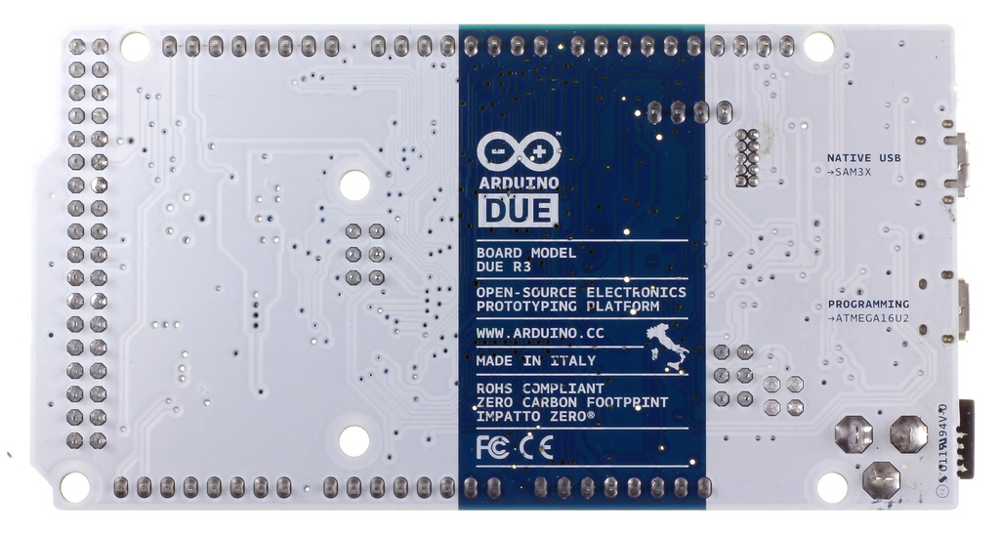
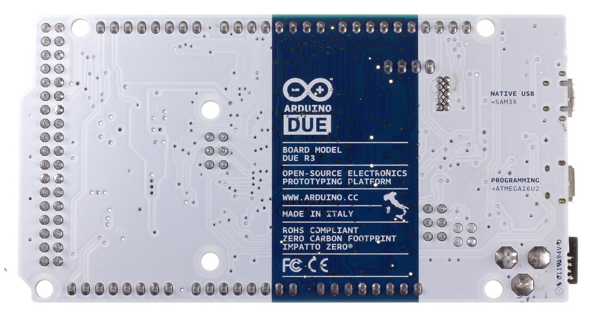

|
Arduino Due - это устройство на основе микропроцессора Atmel
SAM3X8E ARM Cortex-M3 (datasheet). Это первая плата Ардуино на
базе 32-разрядного микроконтроллера ARM. В ее состав входят 54
цифровых вывода (из которых 12 могут работать в качестве
ШИМ-выходов), 12 аналоговых входов, 4 UART (аппаратных
приемопередатчика, осуществляющих последовательную передачу
данных), генератор тактовой частоты на 84 МГц, USB с поддержкой
технологии OTG, 2 ЦАП (цифро-аналоговых преобразователя), 2 TWI,
разъем питания, разъем SPI, разъем JTAG, кнопка сброса и кнопка
очистки памяти. Внимание: в отличие от других плат Ардуино,
рабочее напряжение Arduino Due составляет 3.3В. Соответственно,
максимальное напряжение, которое могут выдержать его выводы,
равно 3.3В. Подача на вывод большего напряжения (например, 5В)
может привести к выходу платы из строя. В состав устройства
входит все необходимое для обеспечения работы микроконтроллера;
для начала работы достаточно просто подать питание от
AC/DC-адаптера или батарейки, либо подключить его к компьютеру
посредством USB-кабеля. Arduino Due совместим со всеми платами
расширения, работающими от 3.3В, и соответствует требованиям
распиновки 1.0: Выводы SDA и SCL (TWI) расположены возле вывода
AREF. Присутствует вывод IOREF, позволяющий платам расширения
подстраиваться под рабочее напряжение Ардуино. Благодаря этому,
платы расширения могут быть совместимы как с 3.3В-Ардуино
(подобными Due), так и с 5В-Ардуино на основе микроконтроллеров
AVR. Предусмотрен свободный вывод, зарезервированный для будущих
целей. Преимущества использования ядра ARM Благодаря
использованию 32-разрядного ядра ARM, Arduino Due во многом
превосходит типичные платы на базе 8-разрядных
микроконтроллеров. Наиболее существенные отличия заключаются в
следующем: 32-битное ядро позволяет обрабатывать 4х-байтовые
данные всего за один такт. (Для получения более подробной
информации см. описание типа int). Тактовая частота - 84 МГц.
Объем оперативной памяти SRAM составляет 96 КБайт. Объем
флеш-памяти программ - 512 КБ. Наличие DMA-контроллера,
позволяющего разгрузить центральный процессор от выполнения
ресурсоемких операций с памятью.
|
 

|